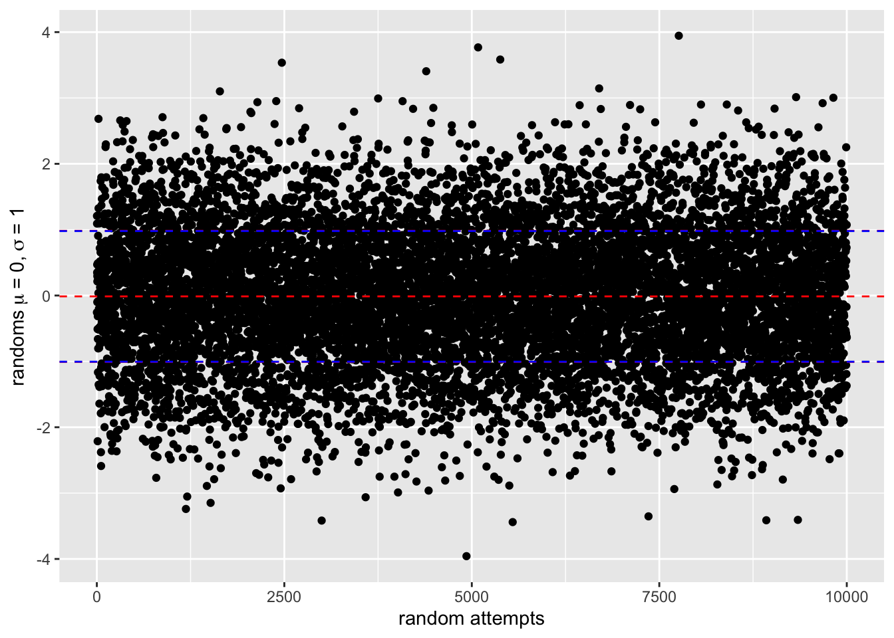

teamA <- c(1.89, 2.1, 1.75, 1.98, 1.85)
meanTeamA <- mean(teamA)
meanTeamA[1] 1.914teamB <- c(1.94, 1.9, 1.97, 1.89, 1.87)
meanTeamB <- mean(teamB)
meanTeamB[1] 1.914This is a R-Lab to reproduce the equations and plots from “Kalman Filter From The Ground Up” by Phil Kim. https://www.kalmanfilter.net
Suppose we want to compare the heights of two high school basketball teams. The following table provides the players’ heights and the mean height of each team.
teamA <- c(1.89, 2.1, 1.75, 1.98, 1.85)
meanTeamA <- mean(teamA)
meanTeamA[1] 1.914teamB <- c(1.94, 1.9, 1.97, 1.89, 1.87)
meanTeamB <- mean(teamB)
meanTeamB[1] 1.914The distance from the mean for each variable would be
distanceFromMeanTeamA <- teamA - meanTeamA
distanceFromMeanTeamB <- teamB - meanTeamBlet’s avoid negative numbers by squaring the distances
squaredDistanceFromMeanTeamA <- distanceFromMeanTeamA^2
squaredDistanceFromMeanTeamB <- distanceFromMeanTeamB^2Sampled variance is the sum of squared distances from the mean divided by the number of observations minus one.
sampledVarianceTeamA <- sum(squaredDistanceFromMeanTeamA) / (length(teamA) - 1)
sampledVarianceTeamA[1] 0.01763sampledVarianceTeamB <- sum(squaredDistanceFromMeanTeamB) / (length(teamB) - 1)
sampledVarianceTeamB[1] 0.00163The variance is the average of the squared distances from the mean
varianceTeamA <- mean(squaredDistanceFromMeanTeamA)
varianceTeamA[1] 0.014104varianceTeamB <- mean(squaredDistanceFromMeanTeamB)
varianceTeamB[1] 0.001304The standard deviation is the square root of the variance
standardDeviationTeamA <- sqrt(varianceTeamA)
standardDeviationTeamA[1] 0.1187603standardDeviationTeamB <- sqrt(varianceTeamB)
standardDeviationTeamB[1] 0.03611094Final plot
ggplot() +
labs(x = "measurements", y= "height,m") +
geom_point(data = data.frame(teamA),
aes(x = 1:length(teamA), y = teamA, color = "Team A")) +
geom_point(data = data.frame(teamB),
aes(x = 1:length(teamB), y = teamB, color = "Team B")) +
geom_hline(yintercept = meanTeamA,
color = "red", linetype ="dashed") +
geom_hline(yintercept = meanTeamB,
color = "blue", linetype ="longdash") +
geom_hline(yintercept = meanTeamA + standardDeviationTeamA,
color = "red", linetype = "dashed") +
geom_hline(yintercept = meanTeamA - standardDeviationTeamA,
color = "red", linetype = "dashed") +
geom_hline(yintercept = meanTeamB + standardDeviationTeamB,
color = "blue", linetype = "dashed") +
geom_hline(yintercept = meanTeamB - standardDeviationTeamB,
color = "blue", linetype = "dashed")Generate a normal distribution with mean 0 and standard deviation 1
data <- rnorm(10000, mean = 0, sd = 1)
#, μ = 0, σ = 1
ggplot() +
labs(x = "random attempts", y= expression("randoms" ~ mu ~"= 0," ~ sigma ~"= 1")) +
geom_point(data = data.frame(data),
aes(x = 1:length(data), y = data)) +
geom_hline(yintercept = mean(data),
color = "red", linetype ="dashed") +
geom_hline(yintercept = mean(data) + sd(data),
color = "red", linetype = "dashed") +
geom_hline(yintercept = mean(data) - sd(data),
color = "red", linetype = "dashed") +
geom_hline(yintercept = mean(data) + var(data),
color = "blue", linetype = "dashed") +
geom_hline(yintercept = mean(data) - var(data),
color = "blue", linetype = "dashed")
Plot distribution density with library function geom_density
ggplot() +
labs(x = "value", y= "density") +
geom_density(data = data.frame(data), aes(x = data))Calculated distribution density manually
mean <- mean(data)
variance <- var(data)
sdeviation <- sd(data)
dencity <- function(x) {
1 / sqrt(2 * pi * variance) * exp(-1/2 * (x - mean)^2 / variance)
}
dencityData <- dencity(data)
ggplot() +
labs(x = "value", y= "density") +
geom_point(data = data.frame(data, dencityData),
aes(x = data, y = dencityData), color = "red")+
geom_density(data = data.frame(data),
aes(x = data))Map each data to count of data rounded to 2 decimal places
dataCount <- data.frame(data) %>%
mutate(data = round(data, 1)) %>%
group_by(data) %>%
summarise(count = n())
ggplot() +
labs(x = "value", y= "count") +
geom_point(data = dataCount, aes(x = data, y = count), color = "red")Collection of measurements
measurements <- c(996, 994, 1021, 1000, 1002, 1010, 983, 971, 993, 1023)
ggplot() +
labs(x = "measurements", y= "gramms") +
scale_x_continuous( breaks=pretty_breaks()) +
geom_point(data = data.frame(measurements),
aes(x = 1:length(measurements), y = measurements)) +
geom_hline(yintercept = mean(measurements),
color = "red", linetype ="solid") +
geom_hline(yintercept = mean(measurements) + sd(measurements),
color = "red", linetype = "dashed") +
geom_hline(yintercept = mean(measurements) - sd(measurements),
color = "red", linetype = "dashed")Dynamic model of the system
\[\begin{equation} x_{n+1} = x_{n} \end{equation}\]
#' @description dynamic model of the system
#'
#' @param x_n current state
#' @retuns predicted state
dynamicModel <- function(x_n) {
return(x_n)
}State Update Equation
\[\begin{equation} x_{n} = x_{n-1} + \alpha(z_n - x_{n-1}) \end{equation}\]
where \(\alpha=\frac{1}{n}\)
#' @description State Update Equation
#'
#' @param x_n_1 previous estimation
#' @param z_n current measurement
#' @returns current updated estimation
stateEquation <- function(n, x_n_1, z_n) {
alpha_n = 1/n
innovation = (z_n - x_n_1)
return(x_n_1 + alpha_n*innovation)
}The Filter (\(\alpha\), \(\beta\) often are replaced with g and h)
#' @description The Filter
#'
#' @param x_0 initial state
#' @param Z measurements
#' @returns array of calculated states
filterG <- function(x_0, Z) {
# predict
results = c()
x_n_1 = dynamicModel(x_0)
n = 1
for (z_n in measurements) {
# estimate
x_n = stateEquation(n, x_n_1, z_n)
# add to estimations
results = c(results, x_n)
# update
x_n_1 = dynamicModel(x_n)
n = n + 1
}
return(results)
}Apply the filter with the initial state of the first measurement
estimations <- filterG(measurements[c(1)], measurements)
ggplot() +
labs(x = "measurements", y= "gramms") +
scale_x_continuous( breaks=pretty_breaks()) +
geom_line(data = data.frame(measurements),
aes(x = 1:length(measurements), y = measurements)) +
geom_hline(yintercept = mean(measurements),
linetype = "longdash") +
geom_hline(yintercept = mean(measurements) + sd(measurements),
linetype = "dashed") +
geom_hline(yintercept = mean(measurements) - sd(measurements),
linetype = "dashed") +
geom_line(data = data.frame(estimations),
aes(x = 1:length(estimations), y = estimations), color = "red")+
geom_hline(yintercept = mean(estimations),
color = "red", linetype = "longdash") +
geom_hline(yintercept = mean(estimations) + sd(estimations),
color = "red", linetype = "dashed") +
geom_hline(yintercept = mean(estimations) - sd(estimations),
color = "red", linetype = "dashed")We assume an aircraft that is moving radially away from the radar (or towards the radar).
Collection of measurements
measurements <- c(30171, 30353, 30756, 30799, 31018, 31278, 31276, 31379,
31748, 32175)
ggplot() +
labs(x = "measurements", y= "feets") +
scale_x_continuous( breaks=pretty_breaks()) +
scale_x_continuous(breaks = pretty_breaks()) +
geom_point(data = data.frame(measurements),
aes(x = 1:length(measurements), y = measurements)) +
geom_hline(yintercept = mean(measurements),
color = "red", linetype ="solid") +
geom_hline(yintercept = mean(measurements) + sd(measurements),
color = "red", linetype = "dashed") +
geom_hline(yintercept = mean(measurements) - sd(measurements),
color = "red", linetype = "dashed")Scale for x is already present.
Adding another scale for x, which will replace the existing scale.If \(x\) - is range,then velocity \(\dot{x}\) can be a derivative of the range :
\[\begin{equation} \dot{x}=v=\frac{dx}{dt} \\end{equation} \end{equation}\]
Dynamic model (also called State Extrapolation Equation or Transition Equation or a Prediction Equation):
\[\begin{equation} \begin{cases} x_{n+1} = x_n + \Delta t \dot{x}_n\\ \dot{x}_{n+1} = \dot{x}_n\\ \end{cases} \end{equation}\]
In the matrix form:
\[\begin{equation} \begin{pmatrix} x\\ \dot{x} \end{pmatrix}= \begin{pmatrix} 1 & \Delta t\\ 0 & 1 \end{pmatrix} \begin{pmatrix} x_n \\ \dot{x}_n \end{pmatrix} \end{equation}\]
#' @description dynamic model of the system
#'
#' @param dt time interval
#' @param x_n vector of previous state
#' @retuns current state
dynamicModel <- function(dt, x_n) {
A = matrix(c(1, dt, 0, 1), 2,2, TRUE)
return(A %*% x_n)
}Let’s \(z_n\) be a measurement at the \(\Delta t\) time interval. Then the state update equation for velocity can be written as:
\[\begin{equation} \hat{\dot{x}}=\hat{\dot{x}}_{n-1} - \beta(\frac{z_n - \hat{x}_{n-1}}{\Delta t}) \end{equation}\]
where \(\hat{\dot{x}}\) is the estimated state and \(\beta\) is the weighting factor to scale the impact of the new measurement.
And the state update equation for position can be written as:
\[\begin{equation} \hat{x} = \hat{x}_{n-1} + \alpha(z_n - \hat{x}_{n-1} ) \end{equation}\]
where \(\alpha\) is the weighting factor to scale the impact of the new measurement.
where \(\alpha\) is the weighting factor to scale the impact of the new measurement.
Unlike the “Weighting the Gold Price” example \(\alpha\) is constant and depends onthe measurement precision.
#' @description State Update Equation
#'
#' @param dt time interval needed to derive velocity
#' @param x_n_1 previous estimation vector
#' @param z_n current measurement
#' @returns current updated estimation
stateEquation <- function(alpha, beta, dt, x_n_1, z_n) {
xHat_n_1 = x_n_1[1,1]
innovationX = (z_n - xHat_n_1)
xHat_n = xHat_n_1 + alpha*innovationX
vHat_n_1 = x_n_1[2,1]
innovationV = (z_n - xHat_n_1)/dt
vHat = (vHat_n_1 + beta*innovationV)
return(matrix(c(xHat_n, vHat), nrow = 2, ncol = 1))
}The filter
#' @description The Filter
#'
#' @param x_0 initial state
#' @param Z measurements
#' @returns array of calculated states
filterGF <- function(alpha, beta, x_0, Z,dt) {
# setup time interval between measurements 5 seconds
# predict
results = list()
x_n_1 = dynamicModel(dt, x_0)
for (z_n in Z) {
# estimate
x_n = stateEquation(alpha, beta, dt, x_n_1, z_n)
# add to estimations
results = c(results, list(x_n))
# update
x_n_1 = dynamicModel(dt, x_n)
}
return(results)
}Apply the filter with the initial state of the first measurement with \(\alpha=0.2\) and \(\beta=0.1\)
estimations <- filterGF(0.2, 0.1, matrix(c(30000, 40),2), measurements,5)
estimationsX <- unlist(sapply(estimations, function(x) x[1]))
estimationsV <- unlist(sapply(estimations, function(x) x[2]))
ggplot() +
labs(x = "measurements", y= "feets") +
scale_x_continuous( breaks=pretty_breaks()) +
geom_line(data = data.frame(measurements),
aes(x = 1:length(measurements), y = measurements)) +
geom_line(data = data.frame(estimationsX),
aes(x = 1:length(estimationsX), y = estimationsX), color = "red")Apply the filter with the initial state of the first measurement with \(\alpha=0.8\) and \(\beta=0.5\)
estimations <- filterGF(0.8, 0.5, matrix(c(30000, 40),2), measurements,5)
estimationsX <- unlist(sapply(estimations, function(x) x[1]))
estimationsV <- unlist(sapply(estimations, function(x) x[2]))
ggplot() +
labs(x = "measurements", y= "feets") +
scale_x_continuous( breaks=pretty_breaks()) +
geom_line(data = data.frame(measurements),
aes(x = 1:length(measurements), y = measurements)) +
geom_line(data = data.frame(estimationsX),
aes(x = 1:length(estimationsX), y = estimationsX), color = "red")